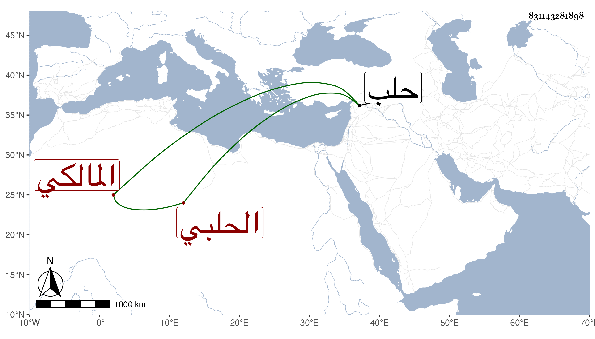

0902Sakhawi.DawLamic.ITO20230111-ara1.EIS1600.831143281898
Biography ID: 831143281898
إبراهيم بن عبد الرحمن بن محمد بن محمد بن محمود بن الشهاب غازي ابن أيوب ابن حسام الدين محمود الكمال أبو إسحاق بن فتح الدين أبي اليسري الحلبي المالكي ابن أخي المحب أبي الوليد محمد الحنفي ويعرف كسلفه بابن الشحنة واستقر في قضاء المالكية بحلب بعد أبيه في سنة إحدى وثلاثين .
